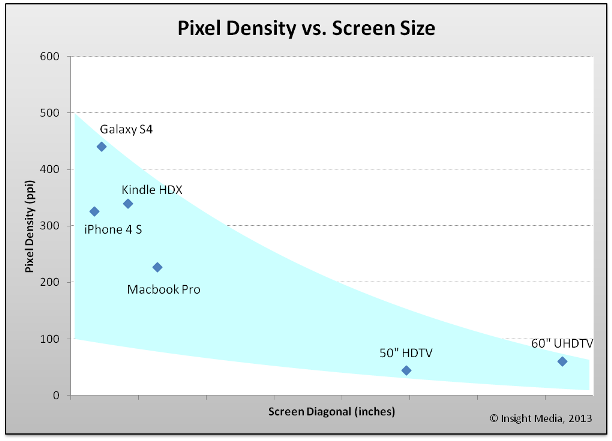

Responsive Design
key words: responsive design, pixel density, resolution, PPI, screen size
Smartphone, Tablet
Laptop, Desktop
Smartwatch
Responsive Design
Design approach to provide an optimal viewing experience across different devices.
Pixel Density
The number of pixels fit into a fixed distance.
Pixel Density vs Screen Size
